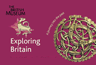
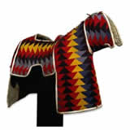
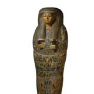
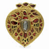
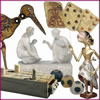
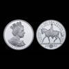

|
|
NewsEighteenth century to eBay
Suitable for families with children 7+ This family trail round the Enlightenment Gallery is about why people collect things, how they can arrange them and what these things can tell us about the world. 
Colossal marble foot Roman, 1st-2nd century AD. Found near Naples, Italy
|
Visiting the MuseumNo matter when you visit the Museum there is always something to do. For all tours, trails, backpacks and other activities please ask in the Reading Room when you come to the Museum. Hamlyn TrailsFree trails for different parts of the Museum and for different age groups. Currently available:

Chasing rainbows with Mama Wata: a trail about colour and shapes for young children (under 5s) Sailing on the Nile: a voyage through ancient Egypt (age 6+). Other trails are also available. Ford Activity BackpacksFord Activity Backpacks contain lots of games and puzzles for the galleries. Currently available: Africa Ancient Egypt OnlineFamily online toursFollow one of our online family Tours, with activities and games to print out.  Unusual jewellery Follow the stories of some unusual pieces of jewellery, from ancient Mesopotamia to modern America.  Toys and games This tour introduces you to some of the toys and games in the Museum, including kites, dolls and puppets from around the world.  A Queen's Tour Celebrate Queen Elizabeth II's recent Golden Jubilee by meeting some queens from the past. Go to children's COMPASS for a full list of online Tours for children.
|
Mummified calf, from Thebes, Egypt, Roman Period, after
|
|||
|
home |
visit |
what's on |
join |
shop |
learning |
COMPASS |
world cultures |
sitemap |
contact us |
copyright
© The British Museum, 2002 |
|||||